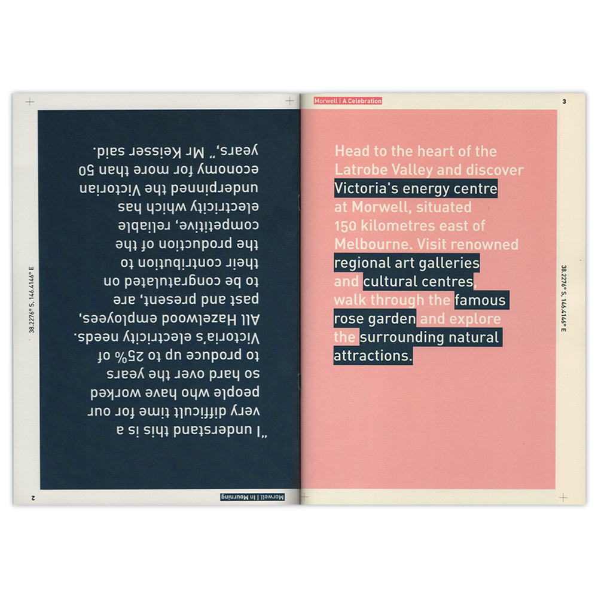
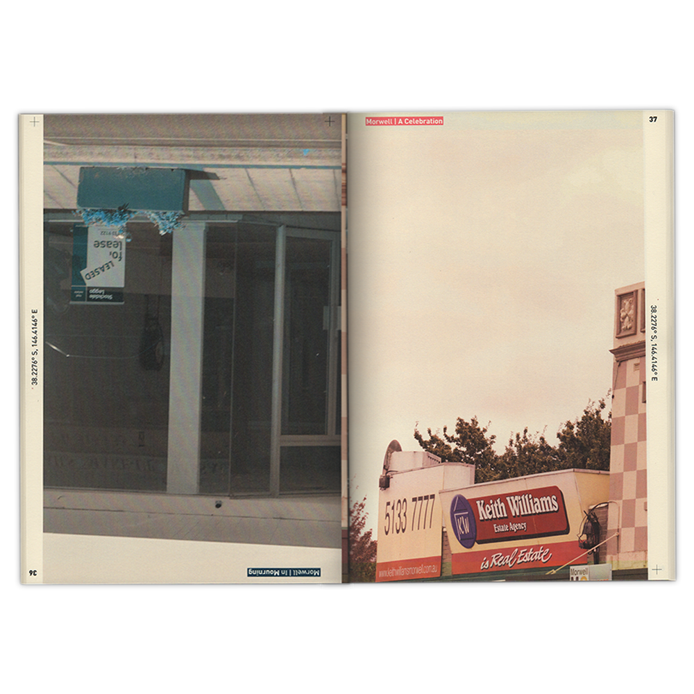

Morwell: In Mourning Morwell: In Celebration
The brief: Morwell: In Mourning Morwell: In Celebration was created as part of Unconventional Publishing. It is a publication that documents my hometown of Morwell in the wake of the Hazlewood Mine closures. It was period of uncertainty for many of the citizens, but there was also a sense of resilience, that we would bounce back and prosper. One side tells a story of loss, while the other a story of strength.
Typeface: FF Din Pro

